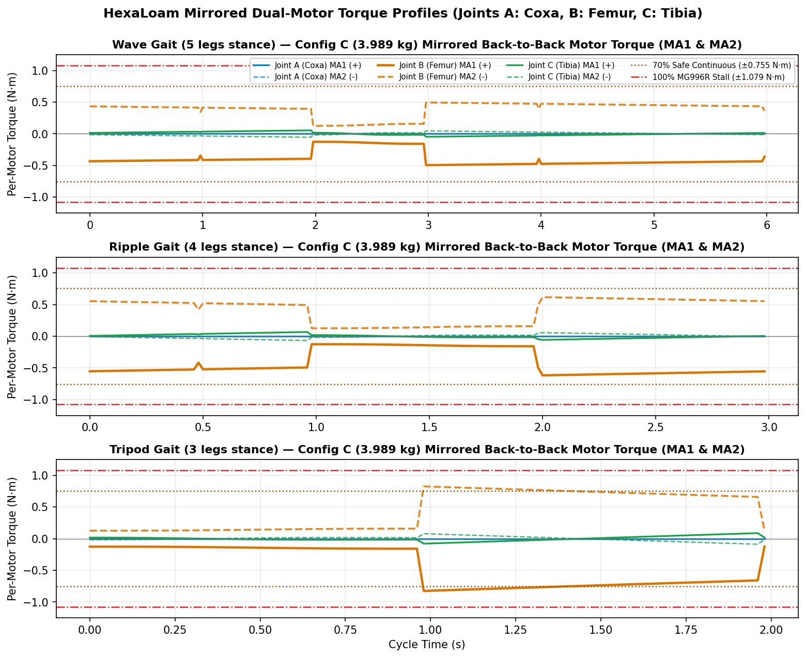

Tripod Locomotion
Footfall stance count 3
The left front, right middle and left rear lift together. The other three feet stay planted. Half a cycle later, the two groups exchange roles.
Modular 3D-printable 18-DOF hexapod with LiDAR
An adaptable six-legged robotics platform for agricultural scouting, LiDAR/LOAM mapping, and legged locomotion research. Download the SOLIDWORKS CAD, PLA+ print files, 15 wiring diagrams, Arduino/ESP32 firmware, and Raspberry Pi/ROS2 controller in one unified repository.

The chassis, three leg links and LiDAR cover make five printable shapes and 20 printed pieces. The base spans about 203.5 × 208.9 mm in plan. Its central bay gives you room to arrange the controller and battery of your choice. Check their fit and cable paths in CAD.
Mounting holes and recessed M3 nut pockets give you several places to attach brackets, payloads or a controller adapter.
For greenhouse scouting or indoor LOAM experiments, the assembly shows one way to mount an RP-Lidar. Add a camera for crop imagery, then check sensor sightlines, aisle clearance and foot placement for your environment. Field performance remains to be measured.
Print the individual STL parts or start with the six-plate Bambu Studio layout. Firmware, wiring diagrams, and Raspberry Pi control software are included in the repository; physical actuators (36× MG996R servos), fasteners, LiPo battery, and controller boards are sourced separately.


Watch which feet lift and which stay planted. All three CAD animations use a 60 mm stride and 22 mm peak foot clearance. Each 10-second clip covers two cycles at 12 mm/s. The grid spacing is 50 mm. Compare all gaits in the video hub
The left front, right middle and left rear lift together. The other three feet stay planted. Half a cycle later, the two groups exchange roles.
The next leg lifts before the previous swing ends. Two feet move at once and four stay in stance. Follow the staggered lift-offs on the footfall diagram.
Follow one moving foot at a time, from rear to front along the left side and then along the right. Five feet remain in stance.
The assembly XML and seven STEP files imported and compiled in MATLAB R2025b with Simscape Multibody. The model contains 18 revolute joint blocks and 29 additional 6-DOF joint blocks. Trace those free connections and verify each hinge axis before using the model to estimate torque or walking speed.
In the single-leg MATLAB example, a 5 N tip load at 0.25 m gives holding torques of 0, 1.10 and 0.60 N·m. For scene development, the project includes five static GLB meshes for Unity and Unreal Engine. Native editor import tests and physical walking tests are pending.
Open Full_Robot_Assembly.SLDASM in SOLIDWORKS to verify controller, battery, M3 nut pockets, and LiDAR sightlines.
Slice Printables/Full_Robot.3mf (6 plates) or the 5 STLs in millimeters. Test-print one leg set before printing all six.
Run smimport('Full_Robot_Assembly.xml') in MATLAB R2025b Simscape Multibody and verify the 18 revolute and 29 6-DOF blocks.
Yes. Five watertight STL designs make 20 printed pieces for one robot: Robot_Base (1), leg links L1 (6), L2 (6), and L3 (6), plus LidarCover (1). They are also pre-arranged in the six-plate Printables/Full_Robot.3mf Bambu Studio project. The longest exported dimension is L3 at 246.2 mm. Servos, fasteners, controller, batteries, and LiDAR are sourced separately.
The 203.5 × 208.9 mm base is controller-agnostic, offering an open central equipment area along with mounting holes and recessed M3 nut pockets for adapter plates, brackets, batteries, and payloads. Check your actual hardware envelopes, screw lengths, and cable paths in CAD before printing.
The reference assembly places an RP-Lidar model on the chassis with an editable protective cover (LidarCover). Builders can adapt the mount for their chosen LiDAR, verify scan-plane clearance, and add an onboard computer running SLAM or LOAM mapping software.
Full_Robot_Assembly.xml and seven STEP files import and compile in MATLAB R2025b with Simscape Multibody, producing 18 revolute joint blocks and 29 additional 6-DOF joint blocks. Free connections and hinge axes must be verified against CAD before computing full-body torque or walking dynamics. A runnable single-leg static torque script (legStaticStudy.m) is included.
Yes. simulation/meshes/ provides five static, meter-scaled GLB meshes (Robot_Base.glb, L1.glb, L2.glb, L3.glb, LidarCover.glb). All five passed Blender 4.2.16 LTS geometry checks, and Unity glTFast and Unreal Engine 5.3 workflows are documented, with native editor tests pending.
HexaLoam is engineered around one shared 18-joint mapping (LF_COXA..RR_TIBIA), CAD-derived 3R kinematics (L1 = 86.53 mm, L2 = 121.06 mm, L3 = 202.50 mm), and back-to-back mirrored dual-motor joints (MA1 & MA2). All four control configurations below are validated in software and analytical torque simulation; physical hardware commissioning is structured into 11 progressive checklists.
Built for classrooms, low-cost prototyping, and direct hardware testing. Drives all 18 joint channels on pins D22..D39 with an external 6.0 V servo supply, hardware E-stop on D2, and 14 step-by-step Arduino sketches. Electronics + 3S 5000 mAh LiPo add 0.507 kg (total robot: 3.793 kg).
Compact single-microcontroller wireless platform driving two PCA9685 boards over 3.3 V I2C (GPIO21 SDA, GPIO22 SCL, addresses 0x40 & 0x41) at 50 Hz, with persistent NVS calibration and optional IMU/foot-contact inputs. Electronics + 3S 5000 mAh LiPo add 0.519 kg (total robot: 3.805 kg).
Recommended for autonomous agricultural scouting and LiDAR/LOAM research. A Raspberry Pi 4 or 5 runs Python inverse kinematics, Tripod/Ripple/Wave gaits, RP-Lidar SLAM, and ROS2, streaming CRC-16 binary packets at 460800 baud to one ESP32 actuator slave. Electronics + RP-Lidar + 3S 5000 mAh LiPo add 0.703 kg (total robot: 3.989 kg).
Distributed architecture assigning one ESP32 + PCA9685 (0x40) to each side of the robot (Left J0..J8, Right J9..J17), with synchronized execution timestamps and coordinated dual-side emergency stop. Electronics + RP-Lidar + 3S 5000 mAh LiPo add 0.733 kg (total robot: 4.019 kg).
Measured directly from the Bambu Studio single-part G-code plates (PLA+, 0.4 mm nozzle, 2 walls, 15% gyroid infill), excluding support and brim filament:
| Part | Qty | Total Sliced (g) | Support + Brim (g) | Part Only (g) | Subtotal (g) |
|---|---|---|---|---|---|
Robot_Base.STL | 1 | 324.22 | 149.55 | 174.67 | 174.67 |
L1.STL (Coxa) | 6 | 85.06 | 25.42 | 59.64 | 357.84 |
L2.STL (Femur) | 6 | 48.60 | 0.27 | 48.33 | 289.98 |
L3.STL (Tibia) | 6 | 97.87 | 24.36 | 73.51 | 441.06 |
LidarCover.STL | 1 | 55.41 | 12.73 | 42.68 | 42.68 |
| Total PLA+ Structure (20 pcs) + 36× MG996R Servos (2/joint) | — | — | — | 1,306.23 g + 1,980.00 g | 3.286 kg |
Analytical 3R leg Jacobian comparison (H = 185 mm, R_foot = 290 mm) for the G-code PLA+ robot + 36 servos (3.286 kg) plus controllers, RP-Lidar (2D planar SLAM; 3D LOAM requires a 3D LiDAR upgrade), and a 3S 5000 mAh LiPo (0.360 kg) against 2× MG996R per joint (2.157 N·m stall @ 6.0 V; analytical 70% continuous target = 1.510 N·m, pending bench thermal validation). Each 18-channel controller drives MA1 directly and opposing MA2 via an inline PWM signal reverser (or optional 36-channel 3× PCA9685 / Mega D22..D57):
| Configuration | Top + LiPo (kg) | Total Mass (kg) | Wave 5-Leg (N·m) | Ripple 4-Leg (N·m) | Tripod 3-Leg (N·m) | Max Extra Top Payload (70% Safe) |
|---|---|---|---|---|---|---|
| A — Arduino Mega 2560 | 0.507 | 3.793 | 0.971 (45.0%) | 1.266 (58.7%) | 1.759 (81.5%) | +2.11 kg (Wave) · +0.73 kg (Ripple) |
| B — ESP32 + Dual PCA9685 | 0.519 | 3.805 | 0.974 (45.1%) | 1.270 (58.9%) | 1.764 (81.8%) | +2.10 kg (Wave) · +0.72 kg (Ripple) |
| C — RPi + Single ESP32 + LiDAR | 0.703 | 3.989 | 1.021 (47.3%) | 1.332 (61.7%) | 1.850 (85.7%) | +1.91 kg (Wave) · +0.53 kg (Ripple) |
| D — RPi + Dual ESP32 + LiDAR | 0.733 | 4.019 | 1.029 (47.7%) | 1.342 (62.2%) | 1.864 (86.4%) | +1.88 kg (Wave) · +0.50 kg (Ripple) |

MA1 = +τ/2 solid, MA2 = -τ/2 dashed) for Joint A (Coxa), Joint B (Femur), and Joint C (Tibia) in Configuration C (3.989 kg) across Wave, Ripple, and Tripod gaits.If you use HexaLoam in a research paper, university course, or custom robot build, please credit the project using the reference below or import the citation file directly into BibTeX or Zotero.
HexaLoam contributors. (2026). HexaLoam: Modular 3D-Printable 18-DOF Hexapod Robot Platform with LiDAR. GitHub: https://github.com/equesai/HexaLoamBrowse the complete CAD, firmware, wiring diagrams, and documentation in the HexaLoam GitHub repository, or download CITATION.cff for automatic citation tools.